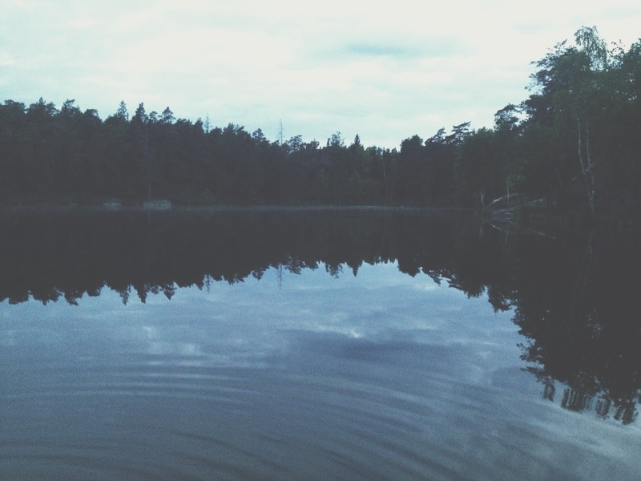
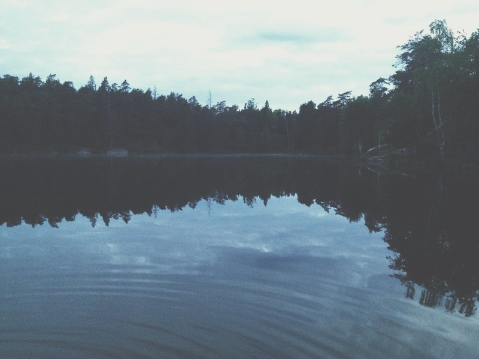
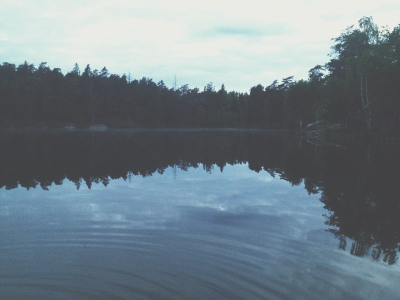
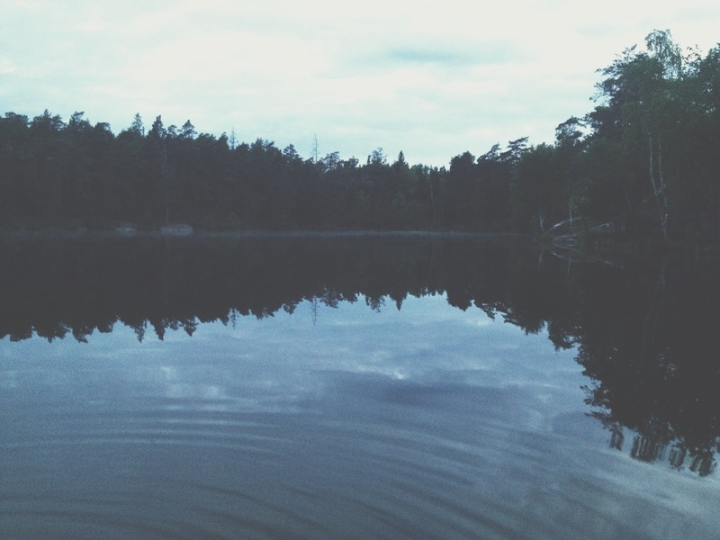

 

Moodboard is a small JavaScript library for presenting image moodboards on the web.
This page uses Moodboard for the background image placement. Refresh the page to see a new layout.
Here are some other examples:
The library consists of two files, one includes the styling, and the other contains the logic for image handling and placement.
Unless you want to edit the JS file yourself, I suggest you download only the minified version.
You can view the code on GitHub.
First include the required files on your page.
<link href="moodboard.css" rel="stylesheet">
<script src="moodboard.min.js"></script>
Insert images into your page, and tell the Moodboard how to find them. For example, you can give it all of the images on the page:
<script>
new Moodboard('img');
</script>
You can use other selectors too, for example, all elements with a class “photo”:
new Moodboard('.photo');If you want to configure moodboard, you can do it like this:
new Moodboard('.photo', {
coverage: 0.2, // roughly how much of the space to cover with photos
variation: 0.2, // how much variation should there be between image sizes
resizeDelay: 300, // in miliseconds, how long to wait before repositioning photos when the browser window resizes
disableResize: false // whether to stop repositioning images when the browser window resizes
});View source of the demos above, I kept them simple so it’s easy to see how Moodboard is used there.
Built by Nat Buckley in 2015.
Copyright © 2015 ntlk
This work, excluding photos, is licensed under the MIT License (MIT).
All photos on this website were taken by Nat Buckley, are copyrighted material and all rights are reserved.